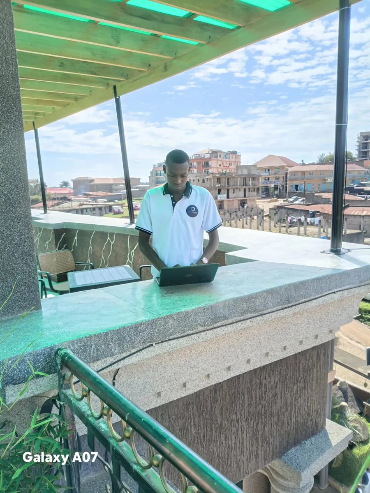
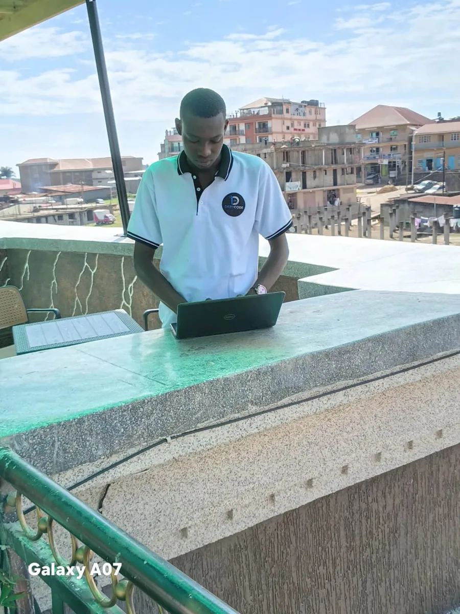

HELLO, WORLD
I'm Derick.
I write code.
My full name is Asiimwe Derick. I'm a software developer from western Uganda, and this is my own corner of the internet: a place for who I am, what I'm learning, and what I'm making along the way.
KYENJOJO, UGANDA · LEARNING IN PUBLIC

01 / ME
A little about
who I am.
I'm a young developer who got hooked on turning ideas into things that actually work on a screen.
I live and work in Uganda, in the west of the country, and I'm proud of building from here. Most of what I make starts with a simple question: how could this be easier for the people around me?
I'm still early in my story, and this page grows as I do.
02 / MY DAYS
What a day
looks like.
01A laptop, a table with a view, and a problem to solve.
02Reading code, breaking things, and fixing them again.
03Learning something new every week, then trying to build with it.
04Working from wherever the Wi-Fi is good, indoors or out.
03 / WHAT I BUILD
Things I've made
and am making.
Not a portfolio pitch, just a running list of what keeps me busy. More detail coming as I add it.
04 / PHOTOS
Some moments
from my days.



05 / NOTES
What I'm
thinking about.
Technology should be useful to ordinary people, not only impressive to other developers.
I care about software that works when the internet is slow, costs what people can actually afford, and is built by someone who answers when it breaks.
More of my thoughts, stories and lessons will land here soon.
06 / HELLO
Want to say hi?
I'd like that.
No pitch needed. If something here made you curious, or you just want to talk tech, send me a message.